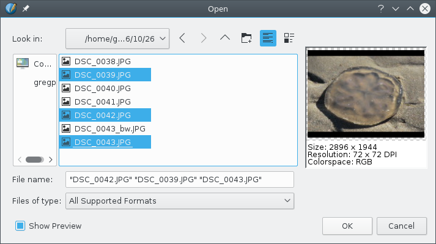
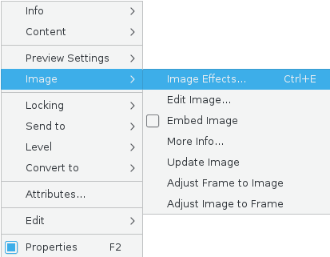
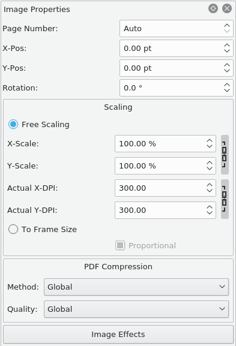
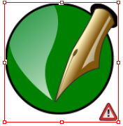

Your first impulse on adding images to your document may be to simply load an image file into it. However, Scribus works in a frame-based environment, so that all content is contained within a frame or box which defines the boundaries of that content. Your first step, then, is to create an Image Frame, after which you will then load an image file into that frame.
See Working with Frames to learn about Image Frame frame creation and manipulation. Note that the image frame shows as a red border with small square handles at the corners and at the midpoints of each side. Diagonals in black are drawn to indicate that it is an image frame. Note that these small square handles disappear when the frame is locked.
The quickest way to load an image into the frame is to right-click on the frame, and select Get Image from the Context Menu. Pressing Ctrl+I or menu File > Import > Get Image will also work. A file dialog will appear, showing the image types that Scribus can import, which include bitmap formats like TIFF, PNG and JPG, as well as vector/mixed vector-bitmap formats PS (PostScript), EPS (Encapsulated PostScript) and PDF, which will be converted to bitmaps.
A new feature in image loading is the ability to create a stack of images, in other words, select a number of images. To do this, hold down Ctrl while selecting one image after another. If you change your mind, click again to unselect your choice.
You can even choose images from another directory by navigating with the dialog. As long as you don't click OK, you will continue to add to your stack of images. When you get back to the canvas, you must have created image frames already to utilize your stack. At this point, just click-click-click from one frame to the next to empty your stack of images. If you click a frame that already has an image, it will be replaced.
Notice how you create a particular order to your list of images.
|  |
After import the image may only partly show, depending on your default settings in Preferences. We’ll see below in Properties: Image how to adjust scaling and positioning of the image in the frame, but for now, you might just right-click on the image, then from the Context Menu that pops up, select Image > Adjust Image to Frame to show how quickly you can size the image to your frame.
Descriptions, advantages and disadvantages of various file formats will be discussed elsewhere, in Importing Bitmap Files.
Right-click on the empty frame to show its Context Menu as seen to the right. An empty frame will not show all these choices. There have been a number of changes, mostly rearrangements, as of version 1.5.3.
|
 |
When an Image is first loaded, the default is for it to have Free Scaling or as is set in File > Preferences/Document Setup > Tools > Image. Under Free Scaling the spinboxes are:
In many cases, we may have a more or less set frame size we wish to squeeze an entire image into, in which case choosing To Frame Size (or Adjust Image to Frame from the Context Menu) makes sense. Without checking Proportional, the image is simply stretched to fit the frame and may be quite distorted. You should find the combination of scaling to frame size (proportional) and then Adjust Frame to Image from the Context Menu very useful for making a frame exactly the right size for your image. The Color Management section tells us that you can now specify per-frame profiles, as well as the Rendering Intent. Likewise, we can see that image compression type and degree on PDF export can now follow the Global settings or be on a per-frame basis. |
 |
|  | If you see this warning triangle in the lower right corner of your frame, it indicates that the image resolution is below 144 DPI, or whatever you have set as your minimum value in the Preflight Verifier settings in File > Preferences or File > Document Settings. This is strictly a warning. |
Enter Edit Contents mode by clicking the icon on the toolbar, or pressing E from the keyboard. Go back to Select Item mode by pressing Esc, or clicking outside, then inside the frame. You will need to have checked Free Scaling in order for this to be operational.
With image frames, Edit Contents mode allows you to click-drag with the mouse to shift the image relative to the frame, i.e., the same as adjusting the X-Pos and Y-Pos in the Image tab.